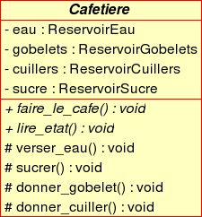
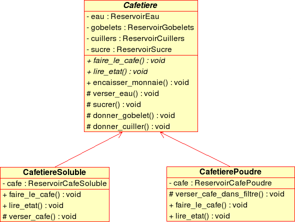
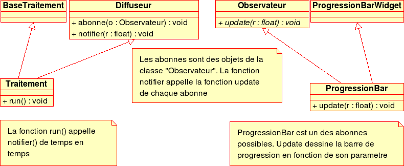

Jusqu'à présent, nous avons vu comment définir des classes, qui permettront de créer des objets dans notre programme. Or, pour l'instant, nous ne pouvons exprimer que certaines relations entre nos objets: les relations d'association, d'agrégation et de composition, qui s'expriment par le fait qu'une donnée membre d'un objet peut être elle aussi un objet. L'héritage est l'outil qui va nous permettre d'exprimer entre nos classes une relation de type "est une sorte de". Cet outil est très puissant, car grâce à lui nous pourrons déclarer des classes d'objets très généraux, puis progressivement "spécialiser" ces classes d'objets. Cette spécialisation est aussi une "extension" de la classe de base: si l'on reste dans les généralités, on n'a pas grand-chose à dire. Plus les choses se précisent, plus on doit détailler. Donc à chaque étape du processus, on rajoutera du code. Le fait de partir d'une classe de base générale permet d'exprimer directement dans le code des concepts abstraits
Reprenons l'exemple des machines à café abordé lors
de l'introduction à la programmation objet pour les gens normaux  .
Posons-nous la question suivante: "qu'est-ce qu'un cafetière ?" On peut aussi poser la question autrement: "Quels sont les points communs à toutes les cafetières ?".
.
Posons-nous la question suivante: "qu'est-ce qu'un cafetière ?" On peut aussi poser la question autrement: "Quels sont les points communs à toutes les cafetières ?".
Une petite réflexion montre qu'une cafetière est une machine qui est capable de:
Nous devrons donc avoir deux fonctions: faire_le_cafe d'une part, lire_etat d'autre part. Mais quel code mettrons-nous dans ces fonctions, puisque à ce stade nous n'avons aucune idée de la manière dont le café serait fait ? La réponse est simple: nous ne mettrons... rien ! Par contre, nous pouvons d'ores et déjà implémenter les mécanismes concernant les réservoirs cités ci-dessus. D'où la modélisation UML suivante:

et le code suivant:
class Cafetiere {
public:
virtual void faire_le_cafe() = 0;
virtual int lire_etat() = 0;
void encaisser_monnaie();
protected:
void verser_eau();
void sucre();
void donner_gobelet();
void donner_cuiller();
private:
ReservoirEau eau;
ReservoirSucre sucre;
ReservoirGobelets gobelets;
ReservoirCuillers cuillers;
}
La syntaxe virtual faire_le_cafe() = 0 permet de définir une fonction virtuelle pure: on se contente ici de dire au compilateur que les objets Cafetiere seront dotés de cette fonction, mais nous lui dirons ultérieurement ce que ces fonctions devront faire concrètement. Le diagramme UML met ces fonctions en italique.
Le fait que la classe Cafetiere contienne dans sa définition au moins une fonction virtuelle pure entraine que cette classe est abstraite. D'où le nom de la classe en italiques dans le diagramme UML.
Notre cafetière peut se décliner en plusieurs modèles:
Nous savons comment faire le café pour du café soluble ou pour du café en poudre. Nous pouvons donc redéfinir nos fonctions virtuelles, comme on le voit sur le diagramme et le code ci-dessous:

et le code suivant:
class CafetiereSoluble: public Cafetiere {
public:
virtual int faire_le_cafe();
virtual int lire_etat();
protected:
void verser_cafe();
private:
ReservoirCafeSoluble cafe;
}
class CafetierePoudre: public Cafetiere {
public:
virtual int faire_le_cafe();
virtual int lire_etat();
protected:
void verser_cafe_dans_filtre();
private:
ReservoirCafePoudre cafe;
}
On a ainsi défini une relation d'héritage entre nos objets. On dit que CafetierePoudre hérite de Cafetiere, ou encore que Cafetiere est une super-classe de CafetierePoudre
On dit que la classe CafetiereSoluble est
dérivée de Cafetiere,
Cafetiere étant une classe de base par rapport à CafetiereSoluble. et CafetierePoudre. CafetiereSoluble et CafetierePoudre sont en quelque sorte des "sous-types" de
Cafetiere, de sorte que les variables de type
CafetiereSoluble sont aussi des variables de type
Cafetiere. Les CafetiereSoluble et CafetierePoudre sont donc des sortes de Cafetiere, ils constituent une extension de Cafetiere
Puisque CafetiereSoluble et CafetierePoudre étendent le type Cafetiere, ils encapsulent des objets tels que eau, qui représente le réservoir d'eau, etc. Mais parce que ces objets sont déclarés dans la section private de Cafetiere, CafetiereSoluble ni CafetierePoudre n'auront accès à ces variables.
 On peut être surpris, à première vue, que les classes dérivées n'aient pas accès à la section
On peut être surpris, à première vue, que les classes dérivées n'aient pas accès à la section private de leurs classes de bases... et pourtant, c'est la moindre des choses:
private n'auraient dès lors plus aucune
raison d'être.private: en
effet, celles-ci peuvent changer du jour au lendemain; seul
l'interface est "garanti" par le concepteur de la bibliothèque.L'idéal pour une classe dérivée est donc de
n'utiliser que les fonctions-membres publiques de la classe de base,
au même titre que n'importe quelle autre fonction. Cependant,
certaines fonctionnalités ou certaines données n'ont pas à être utilisées par tout le monde, mais seulement par les classes dérivées: ainsi dans notre cafetière, tous les modèles de cafetière doivent avoir accès au réservoir d'eau, mais les utilisateurs de la
machine à café n'ont pas de raison, eux, d'y avoir accès. D'où la nécessité de créer une nouvelle section: protected; tout ce qui sera déclaré dans cette section sera utilisable par les classes dérivées, et uniquement par elles. Ainsi, dans notre exemple, on mettra dans protected des fonctions d'accès aux éléments constitutifs de la machine à café (verser_eau()). On considère qu'une bonne
conception doit respecter les règles suivantes:

private, se trouvent les données
encapsulées par l'objet, ainsi que quelques fonctions membres correspondant au conctionnement interne de l'objet.protected, ne se trouvent
que des fonctions-membres. public, ne se trouvent
que des fonctions-membresAinsi, il est toujours possible de dériver une classe à partir d'une autre. La classe dérivée aura toujours accès aux fonctions publiques de sa classe de base. Mais il est souhaitable de prévoir la dérivation, en définissant une section protected "réservée" aux classes dérivées.
En reprenant les classes définies ci-dessus, que se passe-t-il lorsqu'on écrit:
CafetiereSoluble ma_cafetiere;
Il se passe les choses suivantes:
CafetiereSoluble
et de a (ou ses) classes de base.CafetiereCafetiereSolubleAutrement dit, tant qu'on travaille avec les constructeurs par défaut, tout se passe bien: le système se charge d'appeler les constructeur par défaut des classes de base, dans le bon ordre.
Le constructeur de copie doit être écrit de la manière suivante:
class CafetiereSoluble: public Cafetiere {
public:
CafetiereSoluble(const CafetiereSoluble& m) : Cafetiere(m),cafe(m.cafe) {...};
}
en effet, il faut dire explicitement au compilateur quel constructeur il dit appeler pour la classe de base. Cela
peut se faire dans la liste d'initialisation de CafetiereSoluble:
L'expression Cafetiere(m) est correcte puisque m étant une CafetiereSoluble, m est aussi une Cafetiere.
Si on utilise les contructeurs de copie par défaut (c'est le cas, sauf lorsque l'on ne peut faire autrement), tout se passe correctement.
En fait, cela fonctionne parce que le paramètre m est passé par référence au constructeur de copie  .
.
rien n'empêche de définir sur Cafetiere un constructeur à qui on passe des paramètres, par exemple les quantités initiales d'eau, de sucre, ainsi que le nombre de gobelets et de cuillers:
class Cafetiere {
public:
Cafetiere(float e, int g, int c,float s) : eau(e), gobelets(g),
cuillers(c), sucre(s) {};
...
}
De même, rien n'empêche de définir un constructeur pour CafetiereSoluble, à qui on donnera en plus la quantité de café soluble à incorporer dans le réservoir adhoc. Là encore, le système ne peut pas savoir quel constructeur de la classe de base doit être appelé: c'est donc de la responsabilité du constructeur de la classe dérivée d'appeler le constructeur de sa classe de base, en utilisant la liste d'initialisation:
class CafetiereSoluble: public Cafetiere {
public:
CafetiereSoluble(float e, int g, int c,float s, float f) :
Cafetiere(e,g,c,s), cafe(f) {};
...
}
class CafetierePoudre: public Cafetiere {
public:
CafetierePoudre(float e, int g, int c,float s, float f) :
Cafetiere(e,g,c,s), cafe(f) {};
...
}
On ne peut pas initialiser directement les membres de la classe de base dans la classe dérivée: le code suivant:
CafetierePoudre(float e, int g, int c, float s, float f) :
eau(e),gobelets(g),cuillers(c),sucre(s),
cafe(f){};
ne compilera pas, car eau, gobelets, cuillers, sucre sont des membres de la classe Cafetiere,
pas de CafetierePoudre. Il faut obligatoirement passer par un constructeur de Cafetiere.
Lorsqu'un objet de type CafetiereSoluble est détruit, il
se passe la séquence suivante:
CafetiereSoluble est appeléCafetiere est appelé
Si on utilise avec des pointeurs ou des
références, on peut avoir quelques surprises, qui nécessitent l'utilisation de destructeurs virtuels.
Observons le code ci-dessous, dans lequel on gère trois machines à café, de deux types différents, par l'intermédiaire d'un tableau de pointeurs:
Cafetiere* machines[3];
machines[0] = new CafetiereSoluble(1.5,500,500,2,0.5);
machines[1] = new CafetiereSoluble(1.5,500,500,2,0.5);
machines[2] = new CafetierePoudre(1.5,500,500,2,0.9);
for (int i=0; i<3; ++i) {
if (machines[i]->lire_etat() == 1) {
machines[i]->faire_le_cafe();
machines[i]->encaisser_monnaie();
};
};
Le code ci-dessus déclare un tableau de trois objets de type pointeur sur Cafetiere, puis remplit le tableau avec deux machines à café soluble et une en poudre. Souvenez-vous que les fonctions lire_etat et faire_le_cafe ont été délarées avec le mot-clé virtual: ce mot signifie que le compilateur ne cherche pas à savoir exactement quelle fonction lire_etat sera appelée, ni quelle fonction faire_le_cafe() sera appelée, puisque l'allocation mémoire se fait de manière dynamique: il retient donc simplement qu'il devra appeler la version de la fonction faire_le_cafe qui va bien, en fonction du type d'objet qui sera appelé à l'exécution du programme. Le mot polymorphisme décrit la propriété de ces deux fonctions d'adopter "plusieurs formes", suivant le contexte du programme. On parle aussi d'édition de liens dynamique. Remarquons qu'une fois de plus, on retrouve une
manière de penser parfaitement naturelle: si je vous passe une
casserole (classe de base) en vous demandant de la laver (fonction qui
opère sur le type générique casserole), je vous passe en réalité une casserole bien particulière, et pas toujours la même (hier c'était le vieux chaudron à confiture qui me vient de ma grand-mère, aujourd'hui c'est une casserole en aluminium, dans les deux cas il s'agit d'un type de casserole particulier). Dans les deux cas vous allez la laver... mais suivant le type de casserole, vous vous y prendrez différemment. Par contre, la fonction encaisser_monnaie fait l'objet d'une édition de liens statiques (il n'y a pas le mot virtual devant, donc il n'y a pas ici de polymorphisme).
Lorsque vous redéfinissez une fonction virtuelle, la nouvelle
définition doit avoir soit le même type de retour que la fonction
originale, soit un type dérivé (on parle dans ce cas de "types de retour covariants"). Sinon, le compilateur refusera votre code. Bien entendu, elles devront avoir également les mêmes signatures, sinon il
s'agit de deux fonctions différentes, et le mécanisme d'édition de liens dynamiques ne s'applique pas.
Pourquoi les fonctions ne sont-elles pas automatiquement virtuelles ? C'est le cas dans d'autres langages orientés objets, java par exemple. Le problème avec les fonctions virtuelles, c'est qu'elles sont moins performantes que les fonctions classiques. C'est normal: le mécanisme d'édition de liens dynamiques est très puissant, mais il a un coût. Donc, il est recommandé de ne les utiliser que lorsque c'est nécessaire, et pas lorsque la performance est rédhibitoire.
Si vous surchargez une fonction virtuelle, la fonction surchargée ne sera pas virtuelle
automatiquement: il vous faut le spécifier explicitement.
Le code suivant ne sera jamais compilé:
Cafetiere C1;
En effet, la présence des fonctions virtuelles pures faire_le_cafe et lire_etat empêche le
compilateur de générer un objet de type Cafetiere. En d'autres termes, on ne peut pas dire au compilateur "donne-moi de la mémoire et initialise cette cafetière". Il veut savoir précisément de quoi il s'agit. La classe Cafetiere est une classe de base abstraite, (c'est-à-dire une classe qui a au moins une fonction virtuelle pure). En tant que telle, on peut la passer en paramètres (par référence ou par pointeur),mais pas par valeur à une fonction, mais on ne peut pas déclarer d'objet de cette classe.
Ainsi, le code suivant ne pose aucun problème:
Cafetiere* C1;
En effet, il est toujours possible de déclarer un pointeur sur une
classe abstraite. Le type réel de la classe est précisé lorsque le pointeur sera initialisé, le plus souvent en utilisant l'opérateur new..
Le code suivant est utilisable également:
void une_fonction(Cafetiere& c) {...};
CafetiereSoluble cs(1.5,500,500,2,0.5);
CafetierePoudre cp(1.5,500,500,2,0.9);
une_fonction(cs);
une_fonction(cp);
Parce qu'on passe la variable par référence et pas par valeur, il est possible d'utiliser le polymorphisme, de même qu'avec des pointeurs.
ça n'existe pas: le principe d'une fonction virtuelle est que la fonction réellement appelée à l'exécution est la fonction correspondant au type de l'objet existant. Encore faut-il que l'objet soit existant, ce qui n'est pas le cas lors de l'appel d'un constructeur.
là, ça existe: et c'est même fort utile. En effet, le code suivant risque d'entraîner des résultats catastrophiques:
for (int i=0; i<10; i++) {
delete machines[i];
Le problème ici est que seul le destructeur
de la classe de base a été appelé. Si le destructeur de la classe
modele_poudre devait faire quelque chose de particulier
(rendre la mémoire allouée pour le
reservoir_cafe_en_poudre, par exemple), c'est raté. Le
destructeur n'a pas été appelé, et il y a un réservoir à café qui
traîne au fond de la mémoire... Il est donc toujours préférable de
déclarer pour la classe Cafetiere un destructeur
virtuel... quitte à ce que celui-ci ne fasse rien:
class Cafetiere {
virtual ~Cafetiere() {};
};
On pourrait
bien sûr considérer que tous les destructeurs doivent être
virtuels. Malheureusement, déclarer une fonction virtuelle prend des
ressources... c'est d'ailleurs pour cela que toutes les fonctions ne
sont pas virtuelles. Généralement, on peut considérer que la
déclaration de la première fonction virtuelle prend pas mal
de ressources, les fonctions suivantes nettement moins. D'où la
recommandation suivante: toute classe abstraite, ainsi que les
classes qui en dérivent, doivent avoir un destructeur virtuel.
Une classe non abstraite ayant peu ou pas de classes dérivées le
destructeur virtuel a moins de chances d'être indispensable
Si l'opérateur d'affectation
(operator=()) d'une classe dérivée doit être défini
(c'est-à-dire si l'opérateur d'affectation fourni par le compilateur
n'est pas suffisant), celui-ci doit appeler l'opérateur
d'affectation de sa classe de base: sinon, tous les champs ne
seront pas copiés !!!. Par contre, s'il n'est pas nécessaire de
définir un opérateur d'affectation particulier pour une classe
dérivée, le compilateur se chargera correctement d'appeler l'opérateur
d'affectation de la classe de base.
class CafetiereSoluble: public Cafetiere {
public:
CafetiereSoluble& operator=(const CafetiereSoluble& c) {
Cafetiere::operator=(c); // copie de la partie commune
cafe = c.cafe; // copie du reservoir de café
return *this;
};
}
L'opérateur d'affectation d'une classe de base
abstraite doit normalement être déclaré dans une section
protected, quitte à déclarer un operator=
uniquement dans ce but. En effet, par défaut
l'operator= est public. Mais pour une classe abstraite,
cela risque de conduire à des catastrophes:
void f(Cafetiere&c1, const Cafetiere&c2) {
...
c1 = c2;
...
};
main() {
CafetiereSoluble S;
CafetierePoudre P;
f (S,P);
}
Cela aboutit à écrire une égalité entre une machine à café en grains et une machine à capuccino (café soluble+chocolat). Il est clair que cela ne peut pas fonctionner... et pourtant le compilateur a bêtement accepté. D'où le code suivant:
class Cafetiere {
protected:
Cafetiere& operator=(const Cafetiere&c);
}
L'opérateur = étant déclaré dans la section protected, il peut être utilisé par les classes dérivées, mais il est inaccessible pour le reste du monde. De sorte que la fonction suivante ne sera pas compilée:
void f(Cafetiere&c1, const Cafetiere&c2) {
c1 = c2; // ERREUR ! operator= est prive !
};
Dans certains cas, on veut bénéficier d'une opération de copie d'un objet dans l'autre, en s'arrangeant pour que l'objet de destination prenne le type de l'objet copié. Il s'agit d'un clônage polymorphique, il ne s'obtient pas avec l'operateur=, mais avec une fonction Clone, définie dans chaque classe de la hiérarchie de la manière suivante:
class Cafetiere {
...
virtual Cafetiere* Clone() = 0;
}
class CafetiereSoluble {
...
virtual CafetiereSoluble* Clone()
{
return new CafetiereSoluble(*this);
}
};
void f(const Cafetiere&c2) {
Cafetiere* c1 = c2.Clone();
...
};
main() {
modele_grain G;
f (G);
}
La fonction Clone doit être redéfinie dans toutes les classes dérivées de la classe de base. A chaque fois, la définition sera la même, mais
on doit la réécrire. Si on oublie une redéfinition, le compilateur ne s'apercevra de rien, mais on risque d'avoir un comportement erratique lors de l'exécution du programme.
Il est possible, bien que d'une utilisation délicate, de déclarer qu'une classe dérive de plusieurs superclasses. L'utilisation la plus intéressante de l'héritage multiple est la définition d'interfaces:
Imaginons la situation suivante, extrêmement courante:
traitement appelle la fonction-membre run(), qui dure plusieurs minutes.traitement et un framework particulier.Le pattern observateur permet de répondre à ce cahier des charges:

class Observateur {
public:
virtual void update(float r) = 0;
};
class Diffuseur {
public:
void notifier(float r) {
for(int i=0;i<abonnes.length();i++) {
abonnes[i]->update(r);
};
};
void abonne(Observateur * o) {
if (o!=NULL)
abonnes.push_back(o);
};
private:
vector<Observateur*>abonnes;
};
class Traitement: public BaseTraitement, public Diffuseur {
public:
void run() {
while(...) {
...
notifier(x);
};
};
}
class ProgressionBar: public ProgressionBarWidget, public Observateur {
public:
virtual void update(float r) {
...
};
};
Une fois n'est pas coutune, vous pouvez télécharger ici un petit programme que vous devriez pouvoir compiler. On voit que:
Diffuseur comprend une fonction abonne, qui permettra à des objets dérivant de la classe Observateur de s'abonner, afin d'être notifés d'un événement quelconque.Traitement dérive de la classe Diffuseur, elle pourra donc appeler la fonction notifier. Celle-ci appelle update sur tous ses abonnés. Comme seuls des objets dérivant de Observateur peuvent s'abonner, elle est sûre de trouver cette fonction implémentée.Observateur ne comprend qu'une seule fonction virtuelle pure (void update(float)), c'est donc une classe interface.ProgressionBar dérive de Observateur, elle devra donc impémenter la fonction update, ce qui lui permettra d'être notifiée en temps utile.ProgressionBar et Traitement dérivent par ailleurs d'autres classes, suivant la manière dont l'application a été conçue: elles utilisent donc l'héritage multiple.| Langage | Héritage | mot-clé virtual | Classe abstraite | Héritage multiple |
|---|---|---|---|---|
| C++ | OUI | OUI | OUI | OUI |
| perl | OUI(1) | NON(3) | Possible (6) | OUI |
| java | OUI(2) | NON(3) | OUI (4) | NON(5) |
| python | OUI | NON(3) | Possible (6) | NON(5) |
| php5 | OUI | NON(3) | OUI (4) | NON(5) |
@ISA (Est une sorte de)extends (étendre les fonctionnalités de)abstractinterface et
implementation en java, implements en php correspondent aux mêmes
fonctionnalités que l'héritage multiple.
 Emmanuel Courcelle <emmanuel.courcelle@inp-toulouse.fr>
Emmanuel Courcelle <emmanuel.courcelle@inp-toulouse.fr>